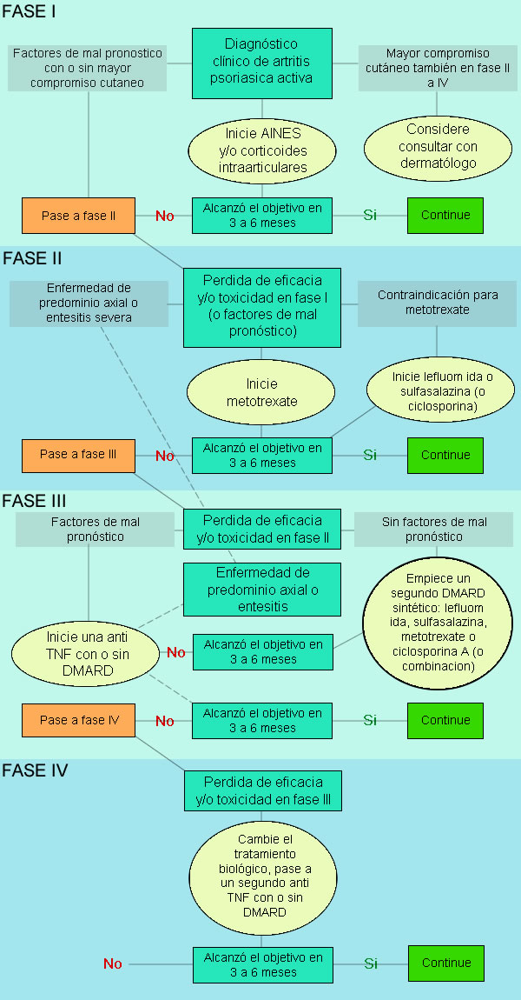

<div class="pages">
  <div data-page="projects" class="page no-toolbar no-navbar">
    <div class="page-content">
      <div class="navbarpages">
        <div class="nav_left_logo"><a href="index.html"></a></div>
        <div class="nav_right_button"><a href="menu.html"></a><a href="#" class="back" data-force="true"></a></div>
      </div>
      <div id="pages_maincontent">
        <h2 class="page_title">Tratamiento artritis psoriásica</h2>
        <div class="page_content">
          <blockquote>Generalidades sobre el tratamiento de artritis psoriásica</blockquote>
          <p>El tratamiento de la artritis psoriásica incluye el uso de una gama de medicamentos, incluyendo algunos agentes para el tratamiento de las manifestaciones cutáneas de psoriasis y otros que también han sido empleados para el tratamiento de pacientes con artropatía inflamatoria. Idealmente, el enfoque terapéutico del paciente debería hacerse en forma conjunta entre el reumatólogo y el dermatólogo. Las guías mas recientes de tratamiento son las de la Liga Europea contra el Reumatismo (EULAR) la cual se basó en una revisión sistemática de la literatura que tuvo en cuenta: AINES, glucocorticoides, antirreumáticos sintéticos, antirreumáticos biológicos. La guía postula 5 principios generales y 10 recomendaciones, establece un flujograma de tratamiento y plantea puntos para profundizar e investigar para mejorar el nivel de evidencia.</p>
          <h3>Principios generales</h3>
          <ul>
            <li>La APs es una enfermedad heterogénea y potencialmente severa, la cual requiere de un tratamiento multidisciplinario.</li>
            <li>El tratamiento de los pacientes con artritis psoriásica debe basarse en los mejores lineamientos de cuidado y las decisiones deben ser tomadas en forma conjunta entre el paciente y el médico.</li>
            <li>El reumatólogo es el médico que debe manejar las manifestaciones musculo esqueléticas de la enfermedad; en pacientes con significativo compromiso cutáneo, el reumatólogo y el dermatólogo deben trabajar en forma conjunta en el enfoque de diagnóstico y terapéutico del paciente.</li>
            <li>El objetivo primario del tratamiento en pacientes con artritis psoriásica es maximizar la calidad de vida a largo plazo, a través de un adecuado control de síntomas, prevención del daño estructural, normalización del funcionamiento social del paciente y  control de la inflamación.</li>
            <li>Los pacientes deben ser monitorizados regularmente y el tratamiento debe ajustarse en forma adecuada.</li>
          </ul
                    >
          <h3>Recomendaciones</h3>
          <ol>
            <h4>
              <li>En pacientes con artritis psoriásica los AINES pueden ser usados para mejorar síntomas y signos músculo esqueléticos. </li>
            </h4>
            <ul>
              <li>El Task force reconoció por unanimidad a los AINES como primera línea de manejo en artritis psoriásica.</li>
              <li>Los AINES han demostrado eficacia en síntomas osteoarticulares pero no en el compromiso cutáneo.</li>
              <li>Debe tenerse en cuenta el riesgo cardiovascular y gastrointestinal.</li>
              <li>Se recomienda la menor dosis posible y el menor tiempo de uso en vista de su potencial toxicidad.</li>
              <li>Los inhibidores de COX2 son tan efectivos como los AINES no selectivos en Aps.</li>
              <li>No se encontró información respecto al posible empeoramiento de las lesiones en piel con el uso de este tipo de medicamentos.</li>
            </ul>
            <h4>
              <li>En pacientes con enfermedad activa (particularmente aquellos con alto conteo de articulaciones inflamadas, daño estructural en presencia de inflamación, VSG o PCR elevadas, y / o manifestaciones extraarticulares clínicamente relevantes), el tratamiento con antirreumáticos modificadores de la enfermedad  (DMARDS) como metotrexate, sulfasalazina o leflunomida debe considerarse en un estadío temprano.</li>
            </h4>
            <ul>
              <li>A la fecha hay poca información para apoyar la decisión del inicio de un DMARD sintético, quedando como preguntas para resolver con futuras investigaciones: quien debería tratarse con DMARD?, cuando tratar con DMARD?</li>
              <li>Enfermedad activa se define como: una o mas articulaciones inflamadas y/o puntos doloroso en entesis y/o dactilitis y/o dolor lumbar inflamatorio</li>
              <li>Factores de mal pronóstico: número de articulaciones inflamadas (5 o más), elevación de reactantes de fase aguda, daño radiográfico en progresión, uso previo de glucocorticoides, pérdida de la funcionalidad y disminución en la calidad de vida.</li>
              <li>En cuanto a cual DMARD escoger, no hay datos de comparaciones directas entre ellos.</li>
              <li>Basados en la literatura médica disponible, los expertos recomiendan al metotrexate como el DMARD de primera línea. Este punto se basa en su amplio espectro terapéutico, diferentes vías de aplicación (VO, SC) y la información clínica disponible en artritis psoriásica y otras enfermedades reumáticas.</li>
              <li>Al parecer las dosis bajas de metotrexate no son efectivas, no hay datos en artritis psoriásica, pero en AR la dosis de 25 mg semana es mas efectiva que el uso de dosis bajas.</li>
              <li>Ninguno de los DMARD sintéticos ha sido probado para (leflunomida, ciclosoporina) y/o ha demostrado (MTX, SSZ, sales de oro, azatioprina) eficacia estructural en artritis psoriásica.</li>
              <li>A pesar de la falta de evidencia, la combinación de DMARD sintéticos puede ser considerada.</li>
              <li>Dado el potencial incremento de la hepatotoxicidad en artritis psoriásica comparado con otras enfermedades reumáticas, deben vigilarse estrechamente las pruebas de función hepáticas en pacientes quienes reciben metotrexate o leflunomida, especialmente en casos de consumo de alcohol, obesidad, DM 2, NASH (esteatohepatitis no alcohólica), y en caso de uso concomitante de otras drogas (estatinas).</li>
              <li>Dado el potencial incremento de la hepatotoxicidad en artritis psoriásica comparado con otras enfermedades reumáticas, deben vigilarse estrechamente las pruebas de función hepáticas en pacientes quienes reciben metotrexate o leflunomida, especialmente en casos de consumo de alcohol, obesidad, DM 2, NASH (esteatohepatitis no alcohólica), y en caso de uso concomitante de otras drogas (estatinas).</li>
            </ul>
            <h4>
              <li>En pacientes con artritis psoriásica activa y psoriasis clínicamente relevante, un DMARD que también mejore la enfermedad cutánea como metotrexate, debe preferirse. </li>
            </h4>
            <ul>
              <li>Algunos DMARD han demostrado efectividad en psoriasis, esto es especialmente cierto para el metotrexate, pero también para leflunomida, sulfasalazina y ciclosporina A. </li>
              <li>El PASI (Psoriasis Area and Severity Index) es una medida para evaluar la extensión del compromiso por psoriasis, sin embargo hay casos en los que el grado de área comprometida es bajo, pero afecta considerablemente la calidad de vida del paciente (compromiso en cara, manos y genitales).</li>
            </ul>
            <h4>
              <li>Inyecciones locales de glucocorticoides pueden considerarse como una terapia coadyuvante en artritis psoriásica. Glucocorticoides sistémicos podrían usarse con precaución a la menor dosis posible.</li>
            </h4>
            <ul>
              <li>Las inyecciones de glucocorticoides pueden ser útiles como una terapia adyuvante en enfermedad localizada (formas oligoarticulares, entesitis o dactilitis).</li>
              <li>Tradicionalmente se ha evitado el uso de glucorticoides sistémicos, sin embargo la revisión de la literatura encontró poca información (solo reportes de casos) que soporte la afirmación de la presencia de crisis de psoriasis por el uso de este tipo de medicamentos.</li>
              <li>Registros de países como Alemania muestran el uso de glucocorticoides sistémicos en  30% de los pacientes, usualmente a dosis bajas (menos de 7,5 mg día).</li>
              <li>No hay evidencia de ensayos clínicos que soporten la efectividad de glucocorticoides en el componente articular de artritis psoriásica</li>
              <li>El Task force considera al uso de glucocorticoides como una opción terapéutica, aunque estos deben ser usados con precaución, teniendo siempre en cuenta la posibilidad de una agudización cutánea.</li>
              <li>Tener mayor precaución en pacientes con PASI alto.</li>
              <li>Tener en cuenta los efectos adversos asociados a la corticoterapia crónica.</li>
            </ul>
            <h4>
              <li>En pacientes con artritis activa y una inadecuada respuesta a por lo menos un DMARD sintético como metotrexate, podría iniciarse terapia con un anti TNF.</li>
            </h4>
            <ul>
              <li>Esta recomendación se refiere a pacientes que han fallado o no han tolerado por lo menos un DMARD sintético (usualmente metotrexate por su efecto en piel y articulaciones pero también incluye a leflunomida y SSZ).</li>
              <li>Se considera falla al tratamiento cuando no se logra remisión o baja actividad de la enfermedad después de 3 a 6 meses.</li>
              <li>No hay información respecto a la superioridad del anti TNF combinado con DMARD sintético sobre el anti TNF en monoterapia.</li>
              <li>En los estudios de los anti TNF el uso de MTX era permitido, pero no requerido y la mitad de los pacientes recibieron monoterapia. </li>
              <li>Los anti TNF (adalimumab, etanercept, golimumab e infliximab), han demostrado eficacia en artritis psoriásica para control de la enfermedad cutánea y articular, y en esta última, también han demostrado prevención del daño radiográfico.</li>
              <li>No hay diferencias demostradas en estudios clínicos en cuanto a la efectividad de los diferentes anti TNF en el componente articular, sin embargo si hay información respecto a la menor efectividad de etanercept para el control del compromiso cutáneo o por lo menos un inicio de acción mas lento al compararse con otros anti TNF (aunque no hay comparaciones cabeza a cabeza). </li>
              <li>Ustekinumab fue comparado contra etanercept en pacientes con psoriasis, demostrándose mejores desenlaces en piel después de las 12 semanas.</li>
            </ul>
            <h4>
              <li>En pacientes con entesitis activa y / o dactilitis con una respuesta insuficiente a AINES o inyecciones locales de glucocorticoides, se puede considerar el uso de anti TNF.</li>
            </h4>
            <ul>
              <li>En este contexto de compromiso clínico, puede considerarse el uso de anti TNF sin uso previo de DMARD, dado que estos no han demostrado eficacia en entesitis y dactilitis  (aunque hay pocos estudios).</li>
              <li>Los anti TNF han demostrado eficacia en este subrogado usualmente como puntos finales secundarios de los estudios.</li>
              <li>El diagnóstico de entesitis es heterogéneo y varía entre estudios por lo que se sugiere enfocarse en el compromiso de la calidad de vida y funcionalidad del paciente, los cuales pueden verse severamente afectados en algunos casos como lo es la entesitis del tendón de Aquiles.</li>
              <li>Debe individualizarse cada caso para definir el inicio del anti TNF.</li>
            </ul>
            <h4>
              <li>En pacientes con predominio de compromiso axial que persista activa a pesar de tratamiento con AINES, puede considerarse el uso de anti TNF.</li>
            </h4>
            <ul>
              <li>En estos pacientes, los inhibidores de TNF pueden ser considerados incluso si los DMARD sintéticos no han sido utilizados.</li>
              <li>Este tópico se ha extrapolado de datos de espondilitis anquilosante, en los cuales se han incluido pacientes con psoriasis.</li>
              <li>En artritis psoriásica la efectividad de los anti TNF en enfermedad axial ha sido reportado solo en estudios observacionales.</li>
              <li>Enfermedad activa se refiere a BASDAI (Bath Ankylosing Spondylitis Disease Activity Index)  mayor o igual a 4.</li>
              <li>El Task Force sugiere seguir las recomendaciones establecidas para espondilitis anquilosante.</li>
            </ul>
            <h4>
              <li>El tratamiento  con anti TNF puede ser considerado excepcionalmente en pacientes  muy activos que no han recibido DMARD, particularmente aquellos con altos conteos de articulaciones dolorosas, daño estructural en presencia de inflamación y/o compromiso extra-articular clínicamente relevante, especialmente en aquellos con severo compromiso cutáneo.</li>
            </h4>
            <ul>
              <li>Esta recomendación está basada en consenso de expertos, pues no hay datos derivados de estudios clínicos</li>
              <li>Podría aplicar para pacientes con comorbilidades que contraindiquen el uso de DMARD sintético y factores de mal pronóstico, en conjunto con enfermedad cutánea severa.</li>
            </ul>
            <h4>
              <li>En pacientes quienes han fallado a un primer anti TNF, puede considerarse el cambio a un segundo anti TNF.</li>
            </h4>
            <ul>
              <li>Esta recomendación se deriva de algunos estudios que han demostrado una adecuada respuesta a un segundo anti TNF en artritis psoriásica.</li>
              <li>La recomendación también es extrapolada de estudios en artritis reumatoide.</li>
              <li>No hay información para recomendar un anti TNF específico en primera o segunda línea de manejo.</li>
            </ul>
            <h4>
              <li>Cuando se ajuste la terapia, además del grado de actividad de la enfermedad, debe tenerse en cuenta aspectos como comorbilidades y seguridad.</li>
            </h4>
          </ol>
          <h3>Recomendaciones EULAR para el tratamiento de artritis psoriásica</h3>
          <a rel="gallery-1" href="images/eular-ap.jpg" title="Recomendaciones EULAR para el tratamiento de artritis psoriásica" class="swipebox"></a>
          <h3>Agenda de investigación</h3>
          <ul>
            <li>Evaluar la eficacia y seguridad de combinaciones de DMARD y combinación de DMARD y biológicos.</li>
            <li>Evaluar la necesidad de tratamiento temprano: a quien se debe tratar y cuando tratarlo.</li>
            <li>Definir objetivos de tratamiento.</li>
            <li>Definir remisión y predictores de remisión.</li>
            <li>Evaluar la efectividad de biológico en monoterapia vs combinación con DMARD.</li>
            <li>Evaluar la posibilidad de suspensión de terapia biológica o mantenimiento con dosis bajas.</li>
          </ul>
          <h3>Lecturas recomendadas</h3>
          <ol class="simple_list">
            <li>Gossec L, et al. European League Against Rheumatism recommendations for the management of psoriatic arthritis with pgarmacological terhapies. Ann Rheum Dis 2012;71:4-12</li>
            <li>Huynh D, et al. Psoriatic arthritis: current therapy and future approaches. Rheumatology 2015;54:20-28</li>
            <li>Olivieri I, et al. Advances in the management of psoriatic arthritis. Nature Rev Rheumatology 2014:10:531-42</li>
          </ol>
          <ul class="features_list">
            <li><a href="cont_artritis.html"><span>Volver a Artritis psoriásica</span></a></li>
            <li><a href="cont_artritis_r.html"><span>Sig - Artritis reactiva</span></a></li>
          </ul>
          <a href="menu.html" class="button_full">Menu principal</a> </div>
      </div>
    </div>
  </div>
</div>
